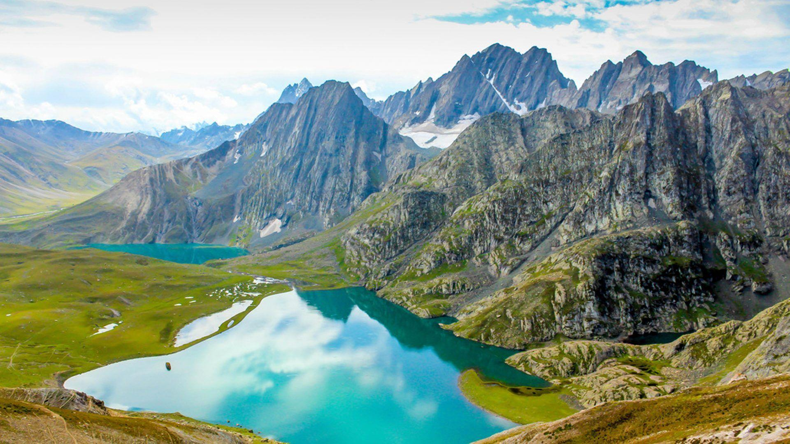

Kashmir, often referred to as "Paradise on Earth," is a region located in the northern part of the Indian subcontinent. It is known for its stunning natural beauty, including picturesque landscapes, serene lakes, lush valleys, and snow-capped mountains. Here are some key highlights of Kashmir:
1. Scenic Beauty: Kashmir is renowned for its breathtaking scenery, particularly the Dal Lake in Srinagar, surrounded by houseboats and Mughal gardens like Shalimar Bagh and Nishat Bagh. The region's landscapes change dramatically with the seasons, from vibrant spring blossoms to snowy winters.
2. Cultural Diversity: The region is culturally rich, influenced by Kashmiri Pandit, Muslim, and Sikh traditions. It has a rich heritage of arts, crafts, and music, with traditional handicrafts such as Pashmina shawls, carpets, and papier-mâché products being highly prized.
3. Spiritual Sites: Kashmir is home to several important religious sites, including the Shankaracharya Temple, Hazratbal Shrine, and the Amarnath Cave Shrine, which is visited by pilgrims during the annual Amarnath Yatra.
4. Adventure Tourism: The region offers opportunities for trekking, mountaineering, skiing, and water sports on its rivers and lakes. Gulmarg is a popular destination for skiing and snowboarding enthusiasts.
5. Cuisine: Kashmiri cuisine is known for its rich flavors and aromatic spices. Signature dishes include Rogan Josh (a spicy meat curry), Yakhni (yogurt-based curry), and various types of bread like Kashmiri Naan and Sheermal.
6. Historical Importance: Kashmir has a rich history that dates back millennia, with influences from various empires and rulers. The Mughals, in particular, left a significant architectural legacy in the form of gardens and mosques.
7. Challenges: Kashmir has faced political unrest and security challenges over the years, impacting tourism. However, efforts are ongoing to promote the region as a safe and attractive destination for travelers.
Overall, Kashmir remains a destination of unparalleled natural beauty and cultural richness, attracting visitors from around the world despite occasional challenges.
27,500